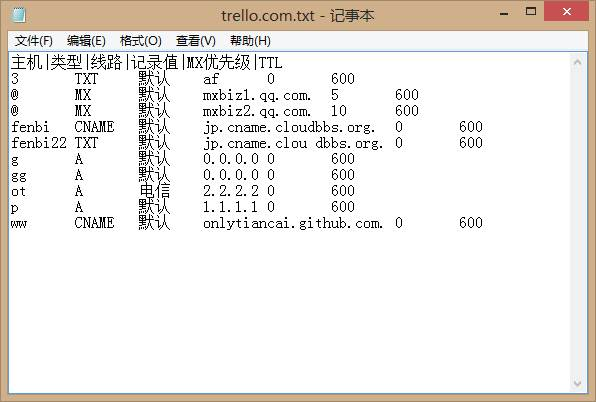

$def with(domain,ans='',msg='')
<div class="container">
        <div class="title_top">
            <h1>导入域名<a href="/viewdomain/$domain">$domain</a>的记录</h1>
        </div>
        <div class="autoload">
            <p>自动扫描NDS记录，并导入</p>
            <a href="/loaddns/$domain">
                <input type="button" value="自动导入">
            </a>
            <br>
            <span>$ans</span>
            <br>
            <p>
                由于算法的原因，只能自动导入类型为'A','MX'的记录。
            </p>
        </div>
        <div class="upload">
            <p>通过上传文件导入记录</p><span>$msg</span>
            <form method="POST" enctype="multipart/form-data" action="">
                <input type="file" name="myfile">
                <br>
                <input type="submit">
            </form>
            <div>
                <h1>注意：文件格式如下图</h1>
                
                <p>
                    具体是：<br>
                    1、文件的第一行表头必须是“主机|类型|线路|记录值|MX优先级|TTL”。<br>
                    2、每一列之间用制表符隔开，并且每列都必须填写，如不是MX记录，“MX优先级”填写0即可。<br>
                    3、文件类型必须是txt格式。<br>
                </p>
            </div>
        </div>
</div>
